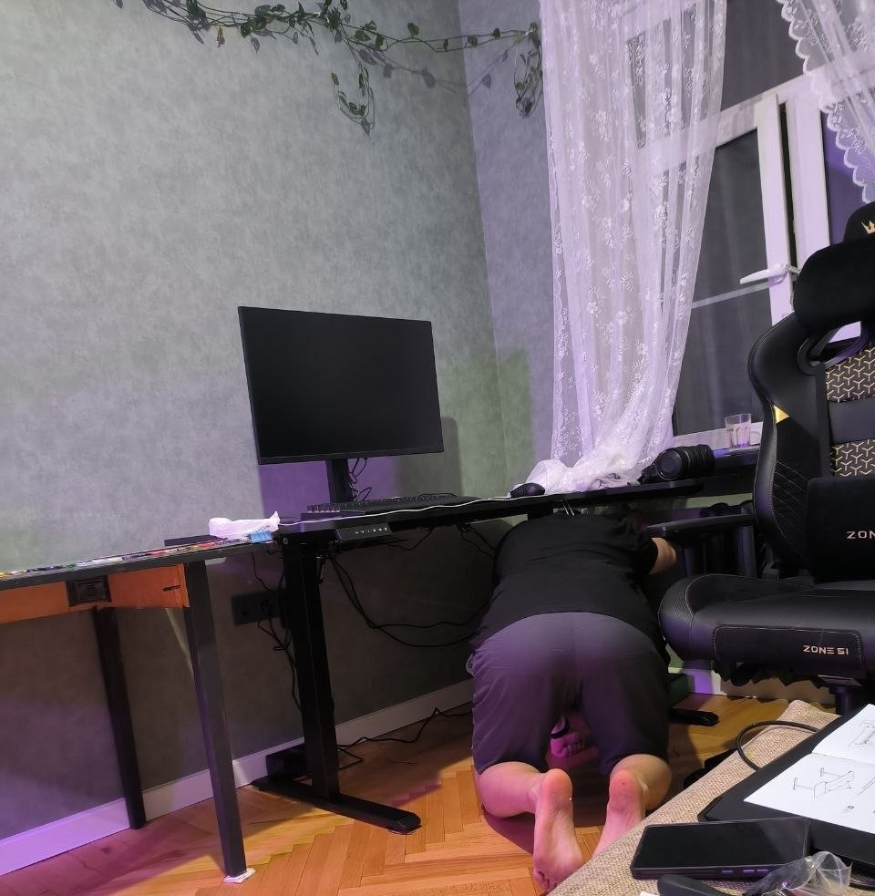
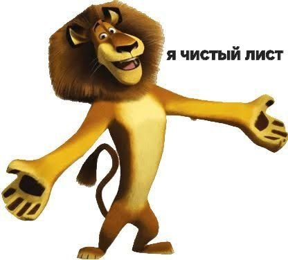
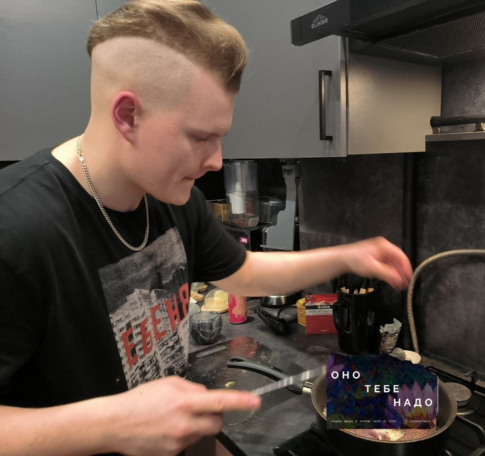
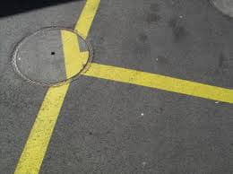
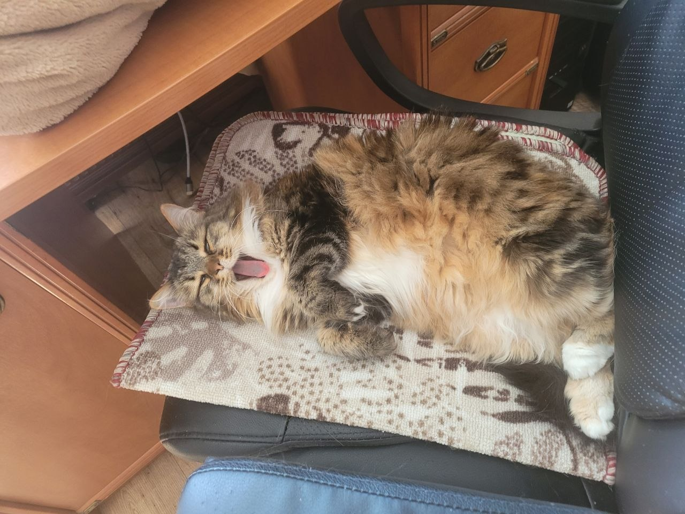
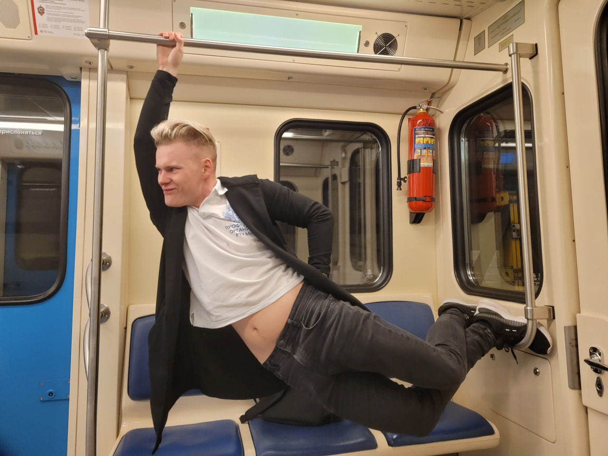
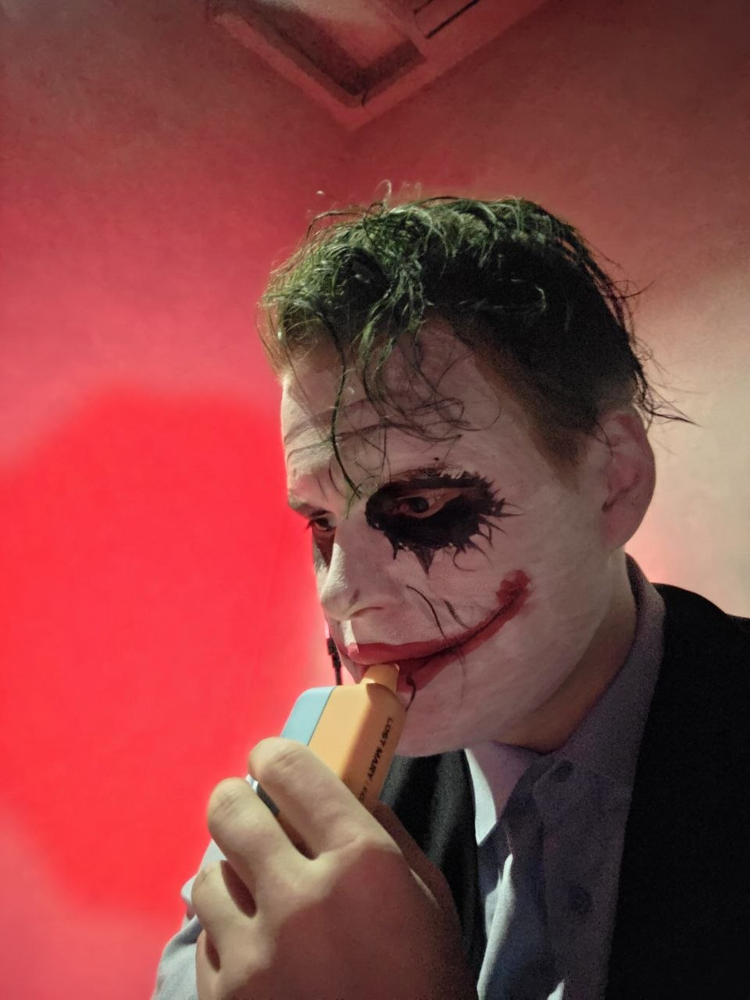

-
Фритрек и нулевой спринт: Подготовка к работе
<Джуниор-сисадмин>
Это было самое начало пути. На этом этапе важно было проникнуться основами и настроиться на учёбу. И, возможно, подумать, как новые знания могут повлиять на ваше будущее.
Безвыходность - состояние, в котором неизбежно найдётся выход. А может и вход тоже. Но это тогда и безвходность.
-
1 спринт: Я — чистый лист
<Готов к новому>
На первых этапах мы работали со страхами и сомнениями, которые часто испытывают новички. Один из них — страх перед чистым листом. Это, конечно же, намного сложнее, чем боязнь куска бумаги. Часто за этим ощущением скрываются более глубокие вопросы: с чего начать? а вдруг будет слишком сложно? Что, если я не справлюсь?
Всегда сложно было представить, каково это. Творить нечто из ничего, оперируя командами. Смотреть в программный код из непонятных символов и слов и понимать, что это означает. Начало положено.
-
1 спринт: А если не получится?
<Рас рас>
Первый проект — позади! Но это всё ещё самое начало пути. Радость могла быстро померкнуть и смениться ожиданием провала. Или вы, наоборот, могли вдохновиться успехами и поверить в себя.
Невероятные и незабываемые эмоции, которые получаешь сдав первый проект. Уже было время возгордиться, но нужно уметь и сдерживать себя, давая себе отчёт в том, какие знания и навыки были получены, чтобы при вопросе о компетентности в таких проектах говорить: Рас рас и готово, Рас рас и готово.
-
2 спринт: Погоня за идеалом
<Рай перфекциониста>
На этом этапе вы уже достаточно разбирались в основах вёрстки, чтобы понять, как много ещё впереди. Вы могли попытаться погнаться за идеалом и понять, что он недостижим. А, может, вы вовсе и не подвержены перфекционизму и вместо того, чтобы сделать идеально, старались просто сделать.
Я старался. Правда.
-
2 спринт: О тех, кто рядом
<Знакомьтесь, Рыся>
Всё это время вы были не одиноки (хотя, возможно, иногда и чувствовали, что одни против целого мира). Вас окружали одногруппники, команда сопровождения и просто близкие люди, которым можно пожаловаться, если очередной макет просто так не поддавался. Осваивать что-то новое легче, когда рядом есть единомышленники, не правда ли?
Сильная мурчащая поддержка.
-
3 спринт: Обходные стратегии
<Под другим углом>
На этом курсе вы постоянно решали разные задачи. В какой-то момент вам могло показаться, что решения просто иссякли. Значит, пришло время посмотреть на задачу под другим углом.
Вот тут на самом деле было очень тяжело. Сверхнагрузка на работе настолько, что дома оставалось только спать. Одновременно с этим вспомнилось, как старшие студенты писали про трудность третьего спринта, да я её не забуду.
-
3 спринт: Когда опускаются руки
<Тяжело>
Во время учёбы часто возникает чувство, когда не знаешь, за что хвататься. Вроде и проектную пора сдавать, и задачи хочется порешать, и в теории получше разобраться, и жизнь не забыть пожить. В такие моменты очень нужна концентрация. Вспомните, откуда вы её черпали.
Первая сдача проекта после дедлайна, хоть и мягкого, но уже было напряжённо, напряжённо настолько, что первый комит был назван: "Господи, помилуй".
-
«Сейчас я здесь»
<Уже смешарик>Сейчас вы уже очень много знаете о вёрстке. Но это только начало. Во-первых, впереди ещё много материала про «красотищу». Во-вторых, с окончанием курса учёба не заканчивается. Вёрстка — это целый мир. И этот мир постоянно меняется. Познать его полностью не получится, но это тот случай, когда важен сам процесс познания. Ведь часто путь — и есть результат.
Больше всего после последнего проекта вёрстки хочется всё занести в obsidian, как и советовал Владислав Балабанович (лучший наставник).